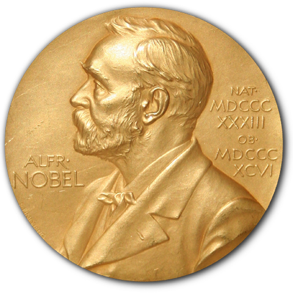

在科学研究的历史长河里，诺贝尔奖一直是衡量科研成果卓越程度的重要标志，它嘉奖了众多为人类知识进步作出杰出贡献的科学家。然而，公众对获奖者的认知多局限于"获奖时刻"，对其学术成长轨迹、领域知识演进路径缺乏系统性理解。通过对诺贝尔奖得主发表记录数据集的分析和可视化，我们可以揭示科学巨匠的"全生命周期"学术行为，有助于弥合科学精英与公众之间的认知鸿沟。
此外，通过对这些数据的分析与可视化，我们能够系统地梳理科学研究的发展脉络，清晰地观察到不同学科在不同时期的兴衰起伏，以及学科交叉融合的动态过程，为预测未来科研发展趋势提供有力依据。
在我们的数据中，共有93,934篇由获奖者发表的论文（物理21,504篇，化学42,657篇，医学29,233篇）,而其中诺贝尔奖获奖论文有873篇（物理282篇，化学259篇，医学332篇），约占总量的0.95%。
在诺贝尔奖的百年长河中，"诺奖滞后期"（即获奖论文的出版时间与获奖年份的时间差）如同一面棱镜，折射出科学发现的传播、验证与认可的多重轨迹。然而，在我们使用的数据集中，却出现了一些异常值——"诺奖滞后期"最小为-87年（玻尔，1922年获奖/2009年发表），类似的还包括威廉·维恩（1911年获奖/1983年出版，-72年）和雅罗斯拉夫·海罗夫斯基（1959年获奖/2010年出版，-51年）。这些"时间倒流"的案例，实则是学术史与数据采集碰撞出的特殊现象。
以尼尔斯·玻尔为例，其1922年诺贝尔物理学奖的获奖论文《论原子和分子的构成》标注为2009年出版，时间差为-87年。这一矛盾源于数据集对论文标识符（MAG）的依赖：玻尔的原始论文可能因历史档案数字化滞后，被后人重新整理并赋予现代出版标识，导致时间差呈现负值。这些"幽灵论文"提示我们，科学史的数字化重建需谨慎对待文献的时空错位。
下面，让我们将时间差范围缩小到0到10年，看看这些处于短期"诺奖滞后期"的诺奖得主情况：化学奖49人、物理学奖66人、生理学/医学奖62人。而这些获奖者又大多集中在20世纪上半叶，彼时，科学共同体规模较小，重大发现易被快速识别，且诺贝尔奖委员会倾向于奖励"当红"科学家。
而随着时间推移，过去60年间，"诺奖滞后期"几乎翻了一番，这受到多种因素影响，比如：科学成果的指数增长，颠覆性研究愈发稀缺，"睡美人"论文的觉醒等等。
您可以通过下方的折线图查看截止到2016年的物理学、化学、生理学/医学的诺贝尔奖得主的学术产出时间分布。折线图中的红色虚线表示获奖年份，其他的虚线则表示获奖论文的出版年份，在折线图下方，您也可以通过圆圈大小来直观感受不同诺奖得主的"诺奖滞后期"。大体上来说，诺奖得主的学术产出会有明显的"获奖前峰值"和"获奖后滑落"现象。
请选择一位诺贝尔奖得主，查看其在不同年份的出版记录数量变化。红色虚线表示获奖年份。
时间差的拉长不仅是学术界的"等待游戏"，更折射出科学生态的深层变迁：（1）在诺奖得主平均年龄突破50大关的当下，青年学者面临着"终身荣誉"的时间挤压；（2）若滞后期持续拉长，许多科学家可能因为去世而错过诺奖；（3）有一些突破性研究的价值可能跨越代际才被完全释放。
诺贝尔奖得主的成就，既是个人智慧的结晶，更是其背后科研生态的产物。为了揭示学术行为如何受机构平台塑造，我们根据获奖论文发表时的机构归属，绘制了顶尖科研机构的获奖分布图：
整体来看，哈佛大学以34次总获奖数遥遥领先，成为唯一突破30次的机构，彰显其"全能型科研"的地位。尤其在化学（12次）和医学（15次）领域占据绝对优势。
通过对截至到2016年的诺奖论文的标题进行关键词抽取，我们可以窥见诺奖委员会在特定时代对何种主题的研究"青睐有加"，那么，这种趋势演变是否和主流的学界研究保持一致呢？为此，我们从Web of Science Core Collection数据库中筛选了physics，chemistry和medicine三个领域从1991年到2000年共10年间的论文（对于每个领域，我们从每一年随机抽取了1000篇论文，保证时间跨度从年初到年末，最后每个领域最终形成了一万篇的数据集），并对其标题进行关键词抽取，最终形成河流图。通过二者的对比，我们得以看出，在1991到2000年这10年间诺奖得主的研究重心与学界的研究重心有何差异，以及，诺奖是否会造成新的"研究热潮"。
请选择一位诺贝尔奖领域，查看其获奖论文关键词趋势与一般论文关键词趋势。
正如不同学校有不同的优势学科，不同的期刊机构也会在不同的学科领域享有不同的声望。我们对诺奖得主的出版记录进行了分析，并将其绘制成了桑基图，以便您更直观的看出不同学科领域中那些最权威的期刊、机构分别是谁。您可以通过下方的图表进行筛选以查看您想看的图表。
请选择桑基图的起点和终点，并选择查看是否清楚空值和仅限获奖论文的结果。
透过对诺奖得主91,710篇论文的解析，我们以数据为尺，丈量了科学发现的传播与认可轨迹：从"时间倒流"的数字化幽灵论文（如玻尔-87年滞后期），到验证周期持续延长的现代困境；从哈佛、洛克菲勒等机构迥异的学科策略（全能扩张 vs 垂直深耕），到获奖论文与普通研究的关键词鸿沟（量子理论与催化应用的分野）。这些发现将"诺奖时刻"还原为动态演进的科学史切片,直观追踪科学家的学术产出起伏、学科交叉的脉络（如材料科学对物理-化学界限的消融），以及顶尖机构的兴衰周期。至此，数据不仅解码了科学精英的"全生命周期"，更架起一座连接公众认知与科研深层的桥梁。